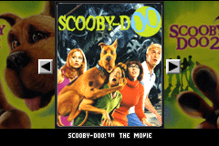

2 Games in 1 - Scooby-Doo + Scooby-Doo 2 - Monsters Unleashed (USA)
EEPROM 4K
Cartridge Identity
- Game Code
BPUE(FamilyBPU)- Header Title
SCOOBYMOVMON- Maker / Revision
78/ rev0- ROM Size
- 16.0 MiB (16,777,216 B)
- Save Media
EEPROM 4K- SHA-256
8df19dc10b617ce67c4810628c3b84b188758fc70ed5d543c087609c8af33e96- Engine / SDK Group
comm-004(98 families)
Screenshots

ROM Assets, Compression & Audio
- BIOS Compression
- LZ77 (
0x10): 532 streams · RLE (0x30): 0 streams - ROM Pointer Tables
- 66 tables (0 pointing to validated compressed streams)
- SDK Backup Tags
EEPROM_V124
Hardware MMIO Subsystems
dma_transfer0x8c02364,0x8c02a80,0x8c02a88ppu_display0x8821230,0x8c00e48,0x8c00e84,0x8c01d98